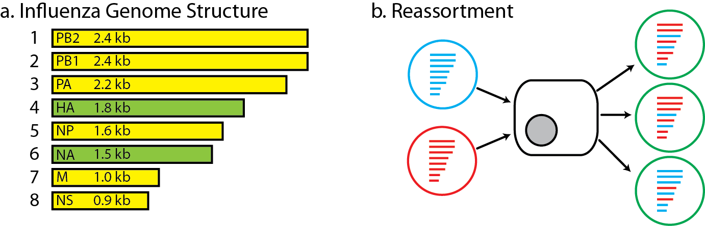
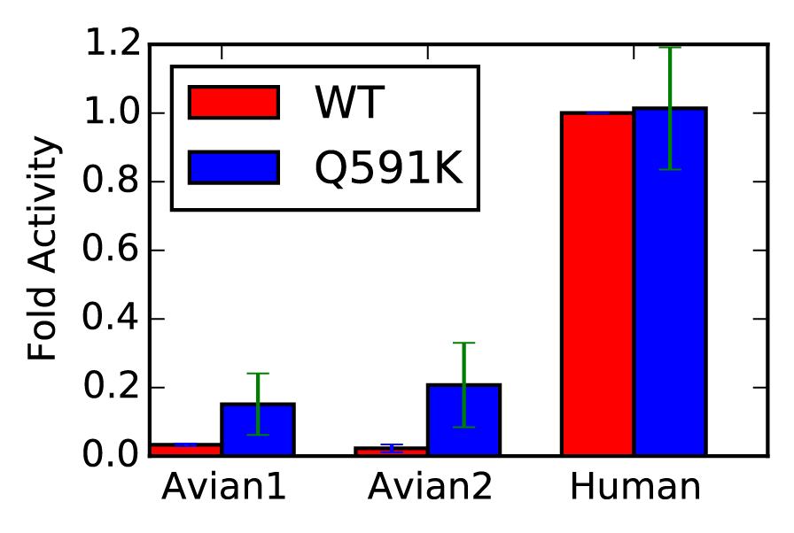
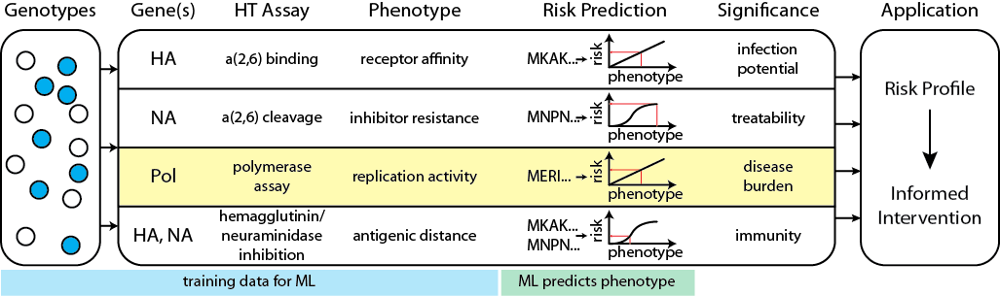
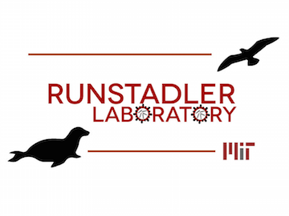

# Data science for pathogen genomic surveillance: predicting phenotype from genotype - Eric J. Ma - PhD Candidate - Runstadler Lab, MIT Biological Engineering Repository: [http://bit.ly/gptalk-em][github_repo] [github_repo]: http://bit.ly/gptalk-em --- ## A little about me - 5th year PhD Candidate in the Runstadler Lab, MIT Biological Engineering. -- - I solve infectious disease data science problems using the Python programming language. -- - Specific problems to date: + Computing the quantitative importance of reticulate evolutionary strategies for pathogen host switches. (*in writing*) + Quantitatively predicting viral phenotype from sequence data. (*today's talk*) + Building my own influenza DBJ assembler. (*for fun*) + Figuring out how to phase influenza genomes from mixed infections. (*not just for fun*) --- ## The Problem(s) Given only its genomic sequence, how do we tell whether a pathogen is going to be dangerous or not? How can we better **use genomic surveillance for pathogen risk assessment**? --- ## Influenza The specific pathogen I work with is the Influenza A Virus.  ```python class Influenza(Pathogen): def __init__(self): self.substitution_rate = 10**(-3) # in units subst/(nt.yr) self.polymerase_genes = set([1, 2, 3, 5])` self.segments = range(1,9) self.can_reassort = self.has_segments(True) ``` --- ## How genomic surveillance is done now 1. Look for known mutations that are experimentally tested to enhance some pathogenesis-related phenotype. 2. Experimentally try to evolove those mutations in the lab. 3. Expert panel inferring rules from publications. (reference: [CDC **I**nfluenza **R**isk **A**ssessment **T**ool][irat]) ## How we think genomic surveillance should be done 1. Quantitative biochemical measures relevant to pathogenesis. 2. Standardized, safe, and scalable biochemical assays to match genotype and phenotype. 3. Measurements done on both host *and* pathogen. More on host later, today's focus is on pathogens. [irat]: http://www.cdc.gov/flu/pandemic-resources/tools/risk-assessment.htm --- ## Difficulties  -- - **Sufficiency/Necessity**: Presence of mutation may enhance phenotype, but may not necessarily cause a "dangerous phenotype levels" -- - **Epistasis**: Non-linear mapping from genotype to phenotype - expert rules alone are not enough -- - **Data**: Lack of high quality genotype-phenotype data -- - **Experiments**: Few assays measure biochemical phenotype that is plausibly related to pathogenesis -- - **Biology**: Novel sequence diversity generated through error-prone polymerase --- ## Vision  -- - **Biochemical assays**: quantitative measure *relevant* to pathogenesis -- - **Characterize**: population diversity -- - **Machine learning**: learn mapping of phenotype from genotype. -- - **Model**: risk profile. --- ## Vision in Code -- ```python # Collect data assay_data = [ReplicationRate(data1), DrugResistance(data2), AntigenicDistance(data3)] ``` -- ```python # Train ML models models = [] for data in assay_data: model = MachineLearningModel(data) model.train() models.append(model) ``` -- ```python # Compute risk profile risk_profile = AggregateModelResults(models) ``` -- ```python # Make predictions new_virus = Sequences(viral_sequence) new_virus_risk = risk_profile.predict(new_virus) ``` --- ## Can we do this? -- - **Parallel problems**: HIV drug resistance -- [Stanford HIV Drug Resistance Database][stanford_db]: 1. comprehensive 2. high quality standardized data 3. sequence matched to fold drug resistance phenotype [stanford_db]: http://hivdb.stanford.edu --- ## Live Demo - [static version][github] [github]: https://github.com/ericmjl/hiv-resistance-prediction/blob/master/Predict%20HIV%20Genotype%20from%20Phenotype%20-%20Custom%20Funcs.ipynb - Tools used - [scikit-learn][sklearn] (aka sklearn): general purpose machine learning library - [nolearn][nolearn]: sklearn API-compatible neural network library [sklearn]: http://scikit-learn.org/stable/ [nolearn]: https://pythonhosted.org/nolearn/ --- ## With Thanks  - [Jon Runstadler][runlab] (advisor, MIT) - [Islam Hussein][ihus] (data, MIT) - [Mark Bathe][lcbb] (committee chair & GPU access, MIT) - [JP Onnela][jp] (committee member, HSPH) - [Danny Park][dpark] (invitation, Broad Institute) [dpark]: http://www.sabetilab.org/daniel-j-park/ [ihus]: http://www.islamhussein.com [runlab]: https://runstadlerlab.mit.edu [lcbb]: http://lcbb.mit.edu [jp]: http://www.hsph.harvard.edu/onnela-lab/